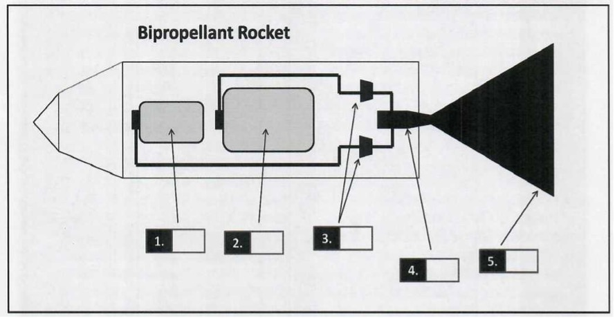
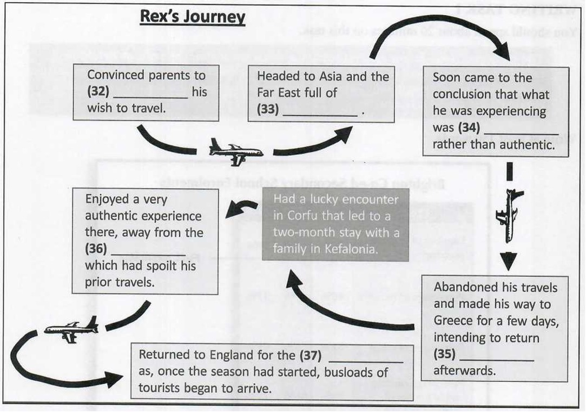

You should spend about 20 minutes on Questions 1-13, which are based on Reading Passage 1 below.
A liquid-propellant rocket is a rocket whose engine uses propellants in
liquid form to power it. The reasonably high density of liquids makes them a
desirable form of engine power as the volume of propellant tanks used to
hold them can be relatively low. Lightweight pumps can also be used to pump
the liquid propellant from the tanks into the engine, which means the
propellant can be kept under low pressure. Both these factors, smaller tanks
and lighter pumps, are advantageous as they effectively lower the rocket’s
mass ratio.
One of the most common types of liquid-propellant
rocket is the bipropellant rocket. Bipropellant rockets generally have two
tanks: the topmost one which contains liquid fuel, and a second, typically
slightly larger tank, containing a liquid oxidiser such as liquid hydrogen
or a hydrocarbon fuel, liquid oxygen combination. The fuel tank and the
oxidiser are connected to the combustion chamber by pumps. It is within the
chamber that the fuel and oxidiser react and combust. This chamber, in turn,
connects to the nozzle through which spent fuel is expelled, generating
sufficient thrust to get the rocket airborne.
Liquid-propellant
rockets are preferred to other types primarily because they have a higher
energy content, thus generating more thrust. Tankage efficiency is another
important factor. Liquid propellant will typically have a density similar to
water and require only modest pressure to prevent vapourisation from
occurring. This combination of high density and low pressure permits a very
lightweight tank. Gasses, on the other hand, are not nearly as dense and
require more pressure to be applied in order to keep them stored within the
tank, meaning heavier tankage must be used, which results in a higher
rocket’s mass ratio.
Other advantages of liquid-propellant
rockets include the fact that they can be reused for several flights, as
happened many times in the Space Shuttle programme operated by NASA, and the
ability to shut down and reignite such rockets multiple times if necessary.
That said, the use of liquid propellants has been associated with a number
of issues. One such issue is termed slosh (the movement of a liquid inside
another object already undergoing motion). Slosh can lead to loss of control
of the vehicle and it can also confuse computerised guidance systems, which
are not equipped to account for the random path disturbances it can cause.
Another major drawback of this kind of rocket is the functional complexity
of the liquid-propellant mechanism, which operates high speed moving parts
at very high temperatures. This can be a recipe for disaster, as it
increases the probability of something going wrong.
The pumps
used to pump the liquid propellants, though lightweight, are also very hard
to design, and this is another bone of contention with proponents of other
forms of rocket propellant. These turbopumps, as they are known, can suffer
serious failures, such as overspeeding or shedding when operated at high
speed.
Essentially, liquid-propellant rockets must be fine-tuned
and they operate with a very small margin for error. They are, therefore,
very high-maintenance, taking into consideration build, design, storage and
flight logistics. However, if the logistical complications can be overcome,
the reward is a highly effective, precise instrument that is relatively
lightweight and can be reused more than once - a huge plus point when the
expense of building a new rocket is factored in.
Solid-fuel
rockets have been in existence much longer, and their main advantage over
the liquid-propellant rocket is their long storage life. Solid-fuel rockets
can be stored indefinitely and can then be readied for redeployment and
operation in a relatively short space of time. They are also less volatile
and for that reason can be transported more easily from place to place. This
explains the military’s preference for solid-fuel rockets when it comes to
its missile cache.
On the other hand, while NASA does deploy
solid-fuel rockets in the initial stages of a space shuttle launch,
primarily for their superior initial thrust, it relies on liquid-propellant
rockets in the latter stages as these rockets provide thrust for longer
periods.
In an attempt to capture the best aspects of both
rocket types - solid and liquid (gas, realistically, being far too volatile)
-hybrid rocket models have recently emerged. These are mechanically and
functionally simpler machines, as they require one, not two, liquid tank.
They are also superior from a safety perspective as they can be loaded
onsite, so they are effectively transported in a benign state and do not
represent a hazard in transit (this type of hazard is a major drawback of
conventional rockets). At present, it is mainly space science agencies that
are researching the potential of hybrid rockets
Label the diagram below.
Choose FIVE answers from the box and write the correct letter, A–G, next to questions 1–5.
A. Nozzle
B. Liquid Oxidiser
C. Combustion Chamber
D. Pump
E. Fuel
F. Hydrogen Gas
G. Thrust
1.
2.
3.
4.
5.
Complete the notes below using NO MORE THAN THREE WORDS from the passage for each answer.
| The Liquid-Propellant Rocket: The Pros and Cons | |
|---|---|
| PROS: | |
| - It generates more thrust as a result of . | |
| - Use of a more lightweight tank helps keep the rocket’s low compared to, say, gas-propellant rockets. | |
| - The rocket can be used more than once and allows the controller to the rocket again several times after it has been shut down. | |
| CONS: | |
| - Liquid fuels inside tanks often suffer from slosh, which can adversely affect , and, in some cases, lead to a loss of control of the rocket. | |
| - Functional complexity of the rocket mechanism increases the likelihood of in flight. | |
| - Pumps are hard to design and prone to failure. | |
Complete the summary below.
Use NO MORE THAN THREE WORDS from the passage for each answer.
| Solid-Fuel Rockets | |
|---|---|
| Solid-fuel rockets have been around much longer than liquid-propellant ones. They are also renowned for having a superior , and, not only can they be stored indefinitely, once required for operational purposes, they can be operational again in a very short space of time, hence why they have always been the type of rocket. Solid-fuel rockets also have , which is why NASA uses them in the initial stages of launching a space shuttle. |
You should spend about 20 minutes on Questions 14-26, which are based on Reading Passage 2 below.
In the latest so-called league table of universities around the world, Irish
institutes have performed comparatively poorly, with only one of the 'big
three' making progress in the right direction through the rankings. Arguably
Ireland's most prestigious university, Trinity College Dublin registered a
sharp fall and has now gone from being just outside the top 50 in the world,
placed in position 52 last year, to 65th twelve months later. University
College Dublin fared even worse in the World University Rankings, and now
lies in 134th place, some 20 places worse off than it was last year. The
only good news, and it was hardly something to write home about, came by way
of University College Cork's modest rise from 184th to 181 st place.
University presidents were quick to blame cutbacks for the
slippage and have criticised the government for taking funding out of
third-level education, claiming that this will undermine our reputation as a
very well-educated workforce in the long term and damage the prospects for a
meaningful economic recovery over the next ten to fifteen years for this
debt-ridden country.
UCD president Hugh Brady was quick to
highlight the futility of Irish universities' attempts to compete with their
British and American counterparts. Brady points out that UK universities now
charge undergraduate students on average €10,000 per annum. In America, the
cost of university education can be even more excessive.
Here in
Ireland, third-level education is still free, but there are calls for fees
to be reintroduced, otherwise this years' slide down the rankings is likely
to be repeated again in 12 months' time.
Another option open to
Irish universities is to gain more of a foothold in the market for
attracting foreign students. Tapping deeper into the global education market
would prove very lucrative and, as funding continues to be pulled out of
third-level education by the government, this is now seen as crucial for the
future in this country. However, the Irish universities' poor performance in
the rankings is a double-edged sword; not only is it harming their
international reputation, but in doing so, it is also making it more
difficult to attract foreign fee-paying students for enrolment in years to
come. And yet, without the funding such students provide, Irish universities
will continue to plot a downward course in the rankings. It is a vicious
circle.
Ironically, in making it harder for local universities
to compete on the global stage by cutting funding, the government is
undermining its own policy agenda, which is to attract double the number of
foreign students each year by 2018. The economics of this policy are sound;
Ireland currently attracts around 26,000 foreign students per annum. Each
international student spends an average of €20,000 in fees and expenses, so
it is clear to see how doubling the number would provide a massive boost for
the economy and much-needed funding for the universities themselves.
Moreover, in the long run, as these well-educated and highly
skilled international students would hopefully depart Ireland with a
positive impression of the country, they would open up new trading and
investment opportunities as they returned home to their native countries.
This is obviously a very sensible government policy, which makes the
government's decision to divert funding away from education all the more
short-sighted and counterproductive.
As for the calls to
reintroduce university fees, these have been met with understandable anger
from both parent and student groups. The Students' Association of Ireland
has threatened to organise a huge protest march, should it get even the
slightest hint that there is some support in government circles for this
proposal. Union president, Michael Carmody, promises to bring the city
centre to a complete standstill and cause widespread disruption to business
and services if the government approves any plans for the reintroduction of
fees. 'We will not take this lying down', he said. 'Ireland is not a
classist society and we are very proud of that. Everyone has an equal
opportunity to attend third-level courses no matter how well-off their
parents are or what their background is. If we allow fees to be
reintroduced, university will become the preserve of an elite few; either
that or, as is the case in Britain, students will be burdened with huge
debts for the rest of their lives. No. We will not stand idly by and let
this happen.
Choose the correct letter, A, B, C or D.
14. The top three Irish universities
15. What do those in charge of Irish universities attribute their performance in the rankings to?
16. Why does Hugh Brady think it is pointless for Irish universities to try to compete with prestigious British and American ones?
17. What can Irish universities do to source more funding, with the exception of introducing fees?
18. Why is Ireland’s performance in the global rankings ‘a double-edged sword’?
Do the following statements agree with the views of the writer in Reading Passage 2?
YES – if the statement agrees with the views of the writer
NO – if the statement contradicts the views of the writer
NOT GIVEN – if it is impossible to say what the writer thinks about
this
19. The government’s decision to cut funding to universities is going to prove counterproductive to its own goals.
20. The government’s target of attracting more than 50,000 foreign students per year by 2018 is an unsound policy.
21. The reintroduction of student fees is to be welcomed, despite parents and children opposing it.
22. The protest march would likely draw large numbers of students due to anger.
Complete each sentence with the correct ending, A–F, below.
23. Michael Carmody, head of the Students’ Union, is
24. The head of the Students’ Union
25. According to Michael Carmody,
26. Michael Carmody’s anger is
You should spend about 20 minutes on Questions 27-40, which are based on Reading Passage 3 below.
Reading Passage 3 has five paragraphs, A–E.
Choose the correct heading for each paragraph from the list of headings (i–viii) below.
27. Paragraph A
28. Paragraph B
29. Paragraph C
30. Paragraph D
31. Paragraph E
Complete the flow-chart below.
Write NO MORE THAN TWO WORDS from the passage for each answer.
32
33
34
35
36
37
Choose the correct letter, A, B, C or D.
38. Why did Rex want to go to Greece for a few days?
39. What did Rex originally intend to do in Greece?
40. What message is the writer trying to put across?